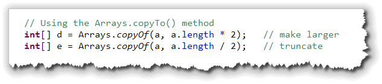
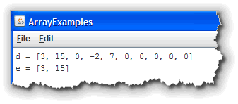
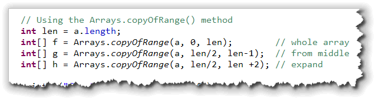
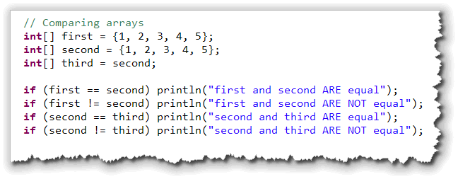
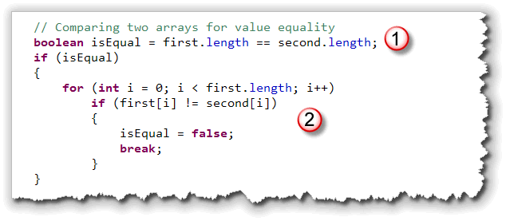
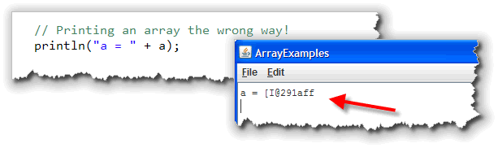
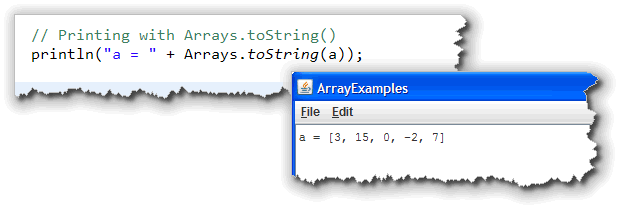
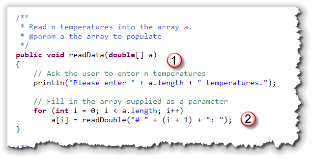
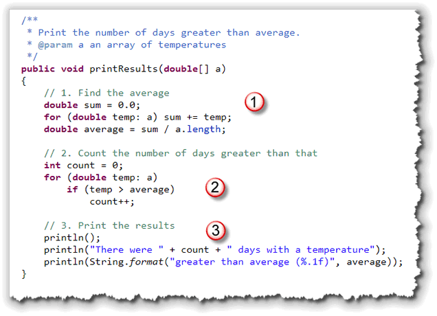

An array variable and the actual
array where the array elements are stored, are two different things,
as this picture, which illustrates the memory layout of the code fragment
below, shows. In this example,
the array variable,
An array variable and the actual
array where the array elements are stored, are two different things,
as this picture, which illustrates the memory layout of the code fragment
below, shows. In this example,
the array variable, grades, refers to the
actual array elements 'A', 'B' and 'C', located "somewhere else"
in memory.
This "somewhere else" is an area known as the heap,
and it's the same memory area used to store objects. The array variable
grades is stored in a different area of memory, and contains
a reference to the actual array.
When you use grades as part of a subscripted variable name,
like this:
 you are not modifying the variable
you are not modifying the variable grades, but are
changing the value in the second element of the actual array
elements that grades "points to", or, more technically,
refers to.
Although high-level languages are designed to hide many of the lower-level details like this, you can't really escape knowing about this difference between value types and reference types, and the implications that this language-design decision has for you as a programmer.
Let's look at that now.
Value and Reference Types
Back in Unit 1, you learned a little bit about how computers use memory. As we studied the history of computing, for instance, you learned about John von Neumann's development of the stored program concept: that memory could be partitioned, with one part storing data, and another part storing program instructions.
Modern computers take this idea even further. When a program is running, we can divide its data section up into three general categories:
- The static storage area. When a program runs, there are some data elements that can be created and stored in memory for the entire time that the program is running. Constant data elements, such as string literals are one example of this kind of data. Variables shared throughout the entire program are another.
 The stack-based storage area. When you create
a local variable inside a method, the memory used to store that
variable isn't set aside until the method is called
and the local variable declaration is encountered. That means
that if a particular method isn't called when you run your
program, no memory is set aside for those variables.
The stack-based storage area. When you create
a local variable inside a method, the memory used to store that
variable isn't set aside until the method is called
and the local variable declaration is encountered. That means
that if a particular method isn't called when you run your
program, no memory is set aside for those variables.
Stack-based variables are stored right next to each other in memory. This is called contiguous storage. One way to think of contiguous storage is to picture a stack of dinner plates in a restaraunt like the Soup Planation. (This is where the name stack came from.)
When you create a local variable inside a method, the memory for the variable is set aside on "the top" of the stack. When the method is finished, all of the variables placed on the stack are automatically removed, so the memory can be used for other purposes.- The heap or "free-store"-based storage area.
Stack-based storage is very efficient, but it has some real
limitations. Because elements are "stacked" on top of each
other, all of the elements need to be pretty much the same
size, (or some multiple of that size). Also, since memory
used for local variables is automatically reclaimed whenever
a method ends, stack-based variables don't work very well
for sharing information between methods.
The third area of memory, the heap, is used to get around these limitations. The heap is used to store the "data part" of reference types, including objects and arrays.

Reference Types
Reference type variables, (which include everything in Java except
for the primitive numeric types along with char and
boolean types),
are divided into two pieces:
- the reference (object or array) variable
- the actual object or array itself
The object or array variable is the variable that you deal with
in your program; this is the part that you provide an
identifier for. The variable (such as the array variable a
shown below) may be stored on the stack or in the static storage area:
 The actual object or the array itself is unnamed, and is
stored on the heap. Heap based variables are created
by using the
The actual object or the array itself is unnamed, and is
stored on the heap. Heap based variables are created
by using the new operator, which allocates
the necessary memory from the heap. In the case of an object
type, the constructor is then run to initialize that
particular instance. In the case of an array the array
constructor is used to determine the number of elements to
allocate on the heap; it doesn't initialize those elements.
When the new operator and the constructor are
finished, they return the address in memory
where the new object is located. It's this address that is
stored in the object variable. If the object couldn't be
created, for some reason, the special value null
is stored in the variable instead.
Assignment
 Primitive types, (like
Primitive types, (like int and char),
are called value types, (as opposed to reference
types, like objects). This just means that a primitive variable
is a "bucket" in memory that contains an actual value.
When you create two primitive variables, like this:
int a = 32, b; // Two independent variables
then each variable is an independent storage area; the
variables a and b are not "linked"
in any way.
Value Assignment
When you use assignment with value types, the result is duplicate, independent copies of the values that the variables contain. Consider this example:
b = a; // Two independent values
When this code is executed, it first makes a copy of the value
stored in the variable a, and then places that
copy in the variable named b:
 This is called a deep copy, and we say that
This is called a deep copy, and we say that
a and b exhibit value semantics.
In Java, only primitive types exhibit value semantics. That's not true of all object-oriented langauges. C++, for instance, is designed to allow user-defined types, (classes), to act in the same way by defining a copy constructor and an assignment operator. You'll study this in CS 250, C++ Programming II.
Reference Assignment
As you saw earlier, an object variable, (sometimes called a handle), contains the address of an object, but not the actual object itself.
If you have some code that looks like this:
int[] a = {3, 15, 0, -2, 7};
int[] b = a;
the assignment copies only the address, not the object or
actual array.
The result is that the array variable b refers
to the same array elements as the variable a; the two
variables are aliases, not independent variables:
 This kind of assignment, where only the address is copied, but
not the underlying object or array, is called a shallow copy, and
we say that types that exhibit this behavior have reference
semantics. In Java, all types other than primitives,
have reference semantics.
This kind of assignment, where only the address is copied, but
not the underlying object or array, is called a shallow copy, and
we say that types that exhibit this behavior have reference
semantics. In Java, all types other than primitives,
have reference semantics.
With that understanding of the difference between reference and primitive types, let's look at the problem of copying and comparing arrays. We'll look at copying other object types later in the semester.
Making Array Copies
Many times, a shallow copy of an array is good enough; it's certainly more efficient than making a complete copy of all of the array elements every time you need to use the array in a different context.
Sometimes, though, you may want to modify the elements of your
array copy, while leaving the original elements unchanged. To
do that, you need to make a deep copy. (Note that you don't need
to worry about this with String variables, since
the String class is immutable; you can't
change the elements in a String so this sharing
behavior is perfectly safe.
The Loop Method
To copy an array using a loop, actually takes two steps. Before you
can apply the loop, you first have to allocate enough room
to hold the copy's elements, like this:
 Use the
Use the length of the first array to decide how
many elements the second array should contain.
Once the copy exists, you can use the regular array traversal
algorithm to copy each element from the original to the copy
like this:

Cloning the Original Array
Many reference types, including arrays, have a clone()
method that allows you to both allocate and copy the elements
in one simple step. Here's how you could make a copy of the array using
the clone() method:
 The cloned array will be the same size and contain the same
elements in the same order as the original.
The cloned array will be the same size and contain the same
elements in the same order as the original.
Using the Arrays Class
 The Arrays class in the
The Arrays class in the java.util package is a
class that "contains various methods for manipulating arrays,
(such as sorting and searching)", according to the introductory
heading in the JavaDocs.
It's easy to miss this class, because there's also an Array
interface that deals with SQL, and an Array class that
deals with reflection. The one that we want has an "s" on the
end.
The copyOf() method is useful, because it allows you to
easily make a copy that is a different size than the original.
If you make the copy larger, then the extra elements are initialized
to 0. If you make the copy smaller, then the extra elements are simply
discarded.


Here's an example that makes two more array copies,d and
e, using the Arrays.copyOf() method. The array
that d refers to is twice the size of a, while
the array that e refers to is half the size.
If we were to display the contents of each of these arrays
(which you'll see how to do shortly), they would look like this.
Note how d is padded with 0s, and how e is
truncated to two elements (half of 5).
The copyOfRange() Method
The Arrays.copyOf() method allows you to grow or
shrink an existing array, but it doesn't allow you to extract
just a portion in the middle. That's where the copyOfRange()
method comes in. The method takes three parameters:
- The source array that contains the elements you want to copy.
- An initial index. This is the location of the first element to be copied. You can specify the length of the original array (in which case no elements will be copied), but other wise, the starting element must be between 0 and the length.
- An ending index. This works a little like the
substring()method. The ending index is not copied into the output. Unlikesubstring()though, you can specify an ending index larger than the size of the original array. The ending index must be at least as large as the starting index.
There are several ways you can use copyOfRange(). Here
are three examples:

As you can see:
- The first example uses 0 for the starting index and
a.lengthas the ending index, thus copying the entire array. - The second example (
g) usesa.length / 2as the starting index anda.length - 1as the ending index, thus copying two elements from the original array. - The final example uses
a.length / 2as the starting index once again, but sets the second index past the end of the original array. When the new array is created, these additional elements will be filled with 0.
System.arraycopy()
Finally, you may want to copy from one portion of an existing array
and place the output into a portion of another array. This is common
when manipulating portions of images in memory. The best way to do
this is to use the System.arraycopy() method, which is
written in highly optimized native code as part of the JVM for your
platform. Using System.arraycopy() will almost always
be faster than writing your own loop. (No, I don't know why it's
not called System.arrayCopy().)
Unfortunately, a first look at the method's documentation can
be daunting. System.arraycopy() takes five arguments:
- The name of the source array (copy from here)
- The source element to start with (use 0 to start at the beginning)
- The name of the destination array (copy to here)
- The desination element to start with (use 0 to start at the beginning)
- The number of elements to copy
Unlike the Arrays copying methods, if you make a mistake in
these arguments (if, for instance, the destination array is not large
enough to receive the elements you want to copy), then the JVM
will throw an exception. Fortunately, when copying an entire array, it's not
hard to get them right. Simply do this:
double[] copy = new double[nums.length];
System.arraycopy(nums, 0,
copy, 0,
nums.length);
That wasn't too hard, was it?
Comparing Arrays
How do you tell if two arrays are equal. Let's see. What do you think
this program prints out?

You should notice:- The contents of all three arrays (were we to print them) would be identical.
- We can use both
==and!=with array variables.
 If we run the program, though, the results might not be what you
expected. Arrays work the same way that
If we run the program, though, the results might not be what you
expected. Arrays work the same way that String variables
do when it comes to comparison. When we print the results, you see
that first is not equals to second,
because the value of the reference (that is, the address of the
actual array elements) is different in each case.
When we compare second and third, though,
we find that they are equal. This is not because
they have the same values in the array elements, but because
both array variables refer to exactly the same actual array.
(Of course, that does mean that they both have the same
contents, since they are exactly the same array.)
As with Strings, we are rarely interested in
this kind of "identity" comparison. Most of the time we are interested
in comparing the actual values stored in the array. There are
two ways to do that.
Using a Loop
You can use Boolean expressions, if statements and loops
to compare two arrays to see if they are equal. Here's the code to compare
first and second to see if they have
the same values:

Note that:- First, we need to determine if the two arrays have the same length. If they don't, then they aren't equal.
- Next, we need to traverse the entire array. At each element, we compare the corresponding elements in the two arrays.
Now, what should we do if they match? Well if that's the case, we check the next one. If they don't match, though, we don't have to go any further: the two arrays are not equal.
When this occurs, we set the Boolean flag to false.
Since nothing ever sets it to true again, that's all we really
need. However, since there's no point in comparing any
of the remaining elements, you can use the break
statement to exit the loop when that's determined.
Using Arrays.equals()
This code is not difficult, but it is kind of annoying to have to do this each time you want to compare two arrays. Isn't there an easier way?
Yes, there is!
The Arrays class has an equals() method
that works pretty much like String.equals(). Here's
the same comparison using this method:

Arrays and Methods
Although you cannot use an actual array as an argument to a method, you can pass array variables as arguments. You can also write methods that return array variables.
Lets see how that works.
To pass an array variable as an argument, you first have to know how to write the formal argument.
Suppose, for instance that you write a method that sums the
values in a double array, (of any size), and
returns the result as a double.
Using the method, you can calculate the sum of the elements in
the double array named nums like this:
double total = sum(nums);
When you write the method, the formal argument can't be a
double; it must be an array of double.
You write the method header like this:
public double sum(double[] list) { }
Here's the entire method
 Notice that:
Notice that:
- You can pass any size array to this method. It uses the enhanced
forloop to traverse the array. - If you wanted to use a traditional
forloop, you would use the the array parameter'slengthfield as the loop bounds.
Printing Arrays
The sum() method I just showed you is a function, but
you can pass array parameters to procedures as well. For instance, to
print an array, you might be tempted to write code like this:

As you can see on the right, what gets printed is the notation that Java uses to indicate that this is an integer array ([I) and
that it is located at address 291aff.
That's certainly fascinating, but I'm sure you're more interested in
seeing the contents of the array that a refers to,
right? One, very easy way to do that is to use the Arrays.toString()
method, which displays the results like this:

That's certainly an improvement, but if you want to change the output display, it's easy enough by writing your own output procedure.A printList() Procedure
Here's a printList() procedure that uses the same format as
Arrays.toString(), but surrounds the array with braces instead
of brackets, so it looks similar to the Java intialization syntax:
 Notice that:
Notice that:
- A set of curly braces are printed surrounding the array elements. If the array is empty, then this is all that is printed.
- If there is at least one element, then the first element is printed following the opening brace.
- All of the remaining elements (starting at index 1) are printed preceded by a comma and a space.
Here's how you'd use a procedure like this. Notice that since it
is not a function, like Arrays.toString() you can't
use it as part of an expression. The call to the printList()
method has to stand alone like any other procedure call:

Modifying Array Parameters
When an array variable (named nums in the picture below)
is passed to a method, a copy of the variable nums
is made and that copy is placed into the formal parameter ar,
as you can see in this figure:

This is the same as with any variable. All method
parameters are passed by value in Java—a copy of the actual
parameter is made for use inside the method.
However, with an array, the effect might not be what you expect.
Because both nums and ar (in this example),
refer to the same actual array elements, any changes made to the
elements of the array ar inside the method
will apply to the elements of the array variable nums as
well. To reiterate, both nums and ar refer to
the same actual array, even though ar is a copy
of the array variable nums.
Here's a method that shows you how that works. The method
doubleIt() doubles every element in the array
passed to it:
// Modifying Array Elements in a Method
public void doubleIt(double[] ar)
{
for (int i = 0; i < ar.length; i++)
{
ar[i] *= 2;
}
}
Output Parameters
This means that arrays can act as output parameters as in
this example which gets a sequence of temperatures from the
user and then prints the number of days that are above average:
 Of course to calculate this, we need to first read all of the elements,
then calculate the average, and only then can we count the number of
days that are above average.
Of course to calculate this, we need to first read all of the elements,
then calculate the average, and only then can we count the number of
days that are above average.
Instead of putting all of that code into the run() method,
instead we call a procedure for intput and another procedure for
output. Notice that:
- We ask the user for the number of days to input. Later, we'll
see how to use a sentinel value and the
ArrayListclass to avoid having to "pre-size" our array. - Next, we create the array variable. This is where the user will place the answers.
- Next, we call the two methods,
readData()andprintResults(), passing the array variabletempsto each of them.
The readData() Method
Here's what the readData() method looks like:

Notice that:- We use the
lengthfield of the array variableato ask the user how many temperatures to enter. - Then, we use a loop and read the values directly into the
elements of the formal array parameter
a. Even though our loop goes from 0 toa.length - 1, when we prompt the user we want to print out #1, #2 and so on.
Since the array parameter a contains a reference that
points to exactly the same elements as the array variable
temps in the main run() method, filling
in the elements in a is exactly like reading
values into the elements in temps.
When the procedure ends, the values you've entered will be
returned through the parameter list, not through a separate
return statement. Thus, we say that in the readData()
method, the formal parameter a is an output procedure:
that is, it is used only to hold data that is generated inside the procedure
and communicated back to the caller; any initial values inside the
parameter are ignored. Data only flows out of the procedure.
The printResults() Method
Here's the code for the printResults() procedure:

 In
In printResults(), the parameter a is an
input parameter; that is, with a the information flows into
the procedure and not out of it. (Unlike the parameter a
in the readData() method.)
Here's what you should notice about this procedure:
- The first loop calculates the average of all of the temperatures.
- Now that we have the average, the second loop allows us to count the number of days greater than the average. I've used the enhanced for loop for each of these, since both only require a forward, read-only traversal of the entire array.
- Finally, a few
print()statements display the results of the calculations.
On the right you can see what the program looks like when it runs.
Returning Array Variables
Java allows you to easily write methods that return array variables. As with passing array variables to a method, the only "trick" is in knowing how to declare the return type.
Suppose, for instance, you wanted to write a method that
returned an array of random double values. Your method header would
look like this:
public double[] makeRandom(int howMany) {}
Notice that the return type is declared as double[]
and not double.
Creating the Returned Array
Once you've figured out how to write the return type, the next question that arises is "How do you get the array variable to return?" The answer is simple—you create a local array variable inside your method, and then return the local variable.
Here's the rest of the makeRandom() method that
shows you how:
// Returning an Array Variable from a Method
double[] makeRandom(int howMany)
{
// 1. A local array variable
int[] ar = new double[ howMany ];
// 2. Fill it with random numbers
for(int i = 0; i < ar.length; i++)
ar[i] = Math.random();
// 3. Return a copy of the local ar
return ar;
}
A Note to C/C++ Programmers
If you've ever programmed in C or C++, returning a local array variable probably makes you a little woozy! Much of a C/C++ course is spent teaching you to avoid doing this at all possible costs.
In C/C++, if you return a local array from a function, the local array is "gone" by the time the function returns. In Java, however, all you are returning is a variable that refers to the array. The actual array is "out there" somewhere.
Of course, you could do the same thing in C/C++ by creating an array on the heap and then returning a pointer to it, but then you risk a memory leak. Because Java has automatic memory management, that's not an issue here.
Coming Up . . .
In this lesson you learned a little bit more about processing arrays. To start out, you learned about the differences between reference types (like arrays), and value types. Then, you saw several different methods to copy and compare array values. Finally, you learned how to write methods that take array input parameters and output parameters. You finished up by learning how to write functions that return array values.
That's it for arrays this week, and the end of the Programming Fundamentals portion of the course. After the midterm, we'll switch gears and start focusing on Object-Oriented Programming or OOP. In anticipation of that switch over, the last online lesson this week will return to Chapter 2 in your textbook and introduce you to the concepts and vocabulary you'll need to know.